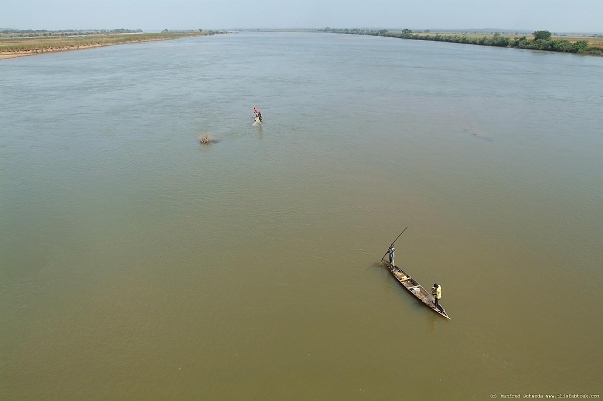
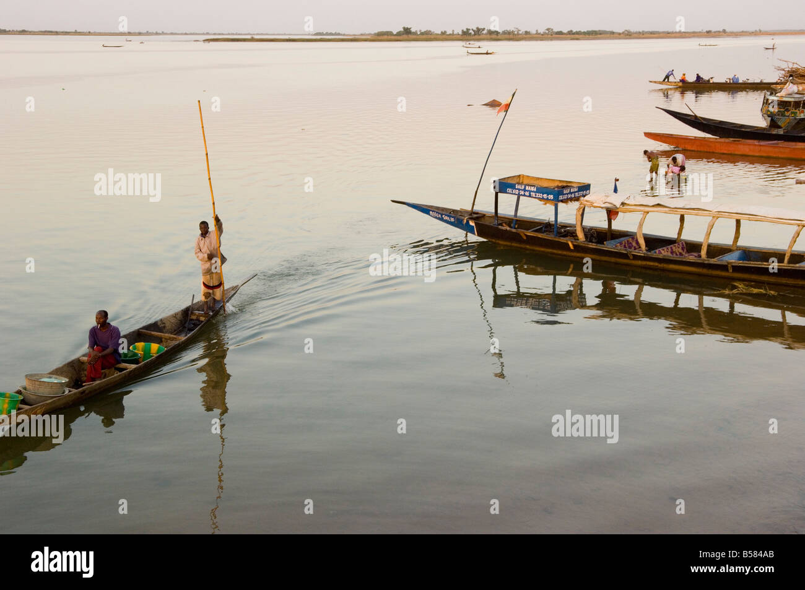

About the River Niger
The River Niger is primarily located in Nigeria. It flows through several other countries, including Guinea, Mali, Niger, and finally reaches Nigeria, where it empties into the Atlantic Ocean. It is the longest river in West Africa and the second-longest in Africa, after the Nile.
Interestingly, Nigeria got its name from the River Niger. Mrs. Flora Shaw Lugard, a British journalist and wife of the first Governor-General of Nigeria, Lord Lugard, coined the name "Nigeria" by combining the word "Niger" (from the river) and "area" to refer to the area around the river.
Formation of the Niger Delta
The Niger Delta is formed as a result of the inflow of the River Niger into the Atlantic Ocean. As the river reaches its mouth, it slows down and deposits large amounts of sediment that it has carried from upstream, including silt, sand, and clay.
The Niger Delta is rich in biodiversity, creating fertile soil that supports agriculture, as well as being an important ecological zone. Despite the challenges posed by human activities, such as oil exploration, the Niger Delta remains a vital region for Nigeria's economy and natural resources.
Key Facts
- The river is approximately 4,180 kilometers long.
- It has two major tributaries: the Benue River and the Sokoto River.
- The Niger Delta is a major ecological zone in southern Nigeria.
Images of the River
 Visit the River Niger
Learn more about the River Niger on its Wikipedia page.